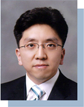
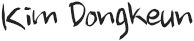

인사말
안녕하십니까!
 아름다운 북한산 자락에서 세계를 바라보며 산학연구 중심대학으로 거듭나는 상명대학교 서울산학 협력단 방문을 진심으로환영합니다! 우리 산학협력단은 대학의 연구역량을 확대하여 교육에 접목시키고 이를 바탕으로 산업사회에 이바지 할 수요자중심의 인력양성을 위하여 정부와 지역사회와의 긴밀한 협조체제 구축뿐만 아니라 연구활동 지원, 성과물 관리, 정보관리 등을 통하여 바람직한 산학연관과 협력체계를 구축해 왔습니다. 그 결과 2004년 설립 이래 지식과 첨단기술의 새로운 시대를 개척하는 선구자의 역할을 지속적으로 해 왔으며, 짧은 기간 동안 괄목할 만한 성장을 해 왔습니다. 또한, 2013년 3월부터는 서울캠퍼스와 천안 캠퍼스의 산학협력단이 분리되어 지역의 특성을 살린 특화된 산학협력단으로서의 임무를 다할 수 있는 토대를 마련하였습니다.
우리 산학협력단은 ‘Global 상명’이라는 모토 하에 중국, 일본, 아프리카, 미주 지역 등 전 세계로 산학협력을 펼치고 있으며 국내에서는 서울시, 종로구, 은평구, 용산구, 양천구 등 지역 밀착형 산학협력도 정교화하고 있습니다. 또한 ‘Dynamic 상명’이라는 모토 하에 400여 가족 기업 및 수 십여 관계기관과 산학협력을 다양화하며 확대해 나아가고 있습니다.
그 결과 외부연구과제 수주액은 매년 약 40%씩 성장하고 있으며, 특허 및 기술이전 건수도 매년 두 배씩 늘어나고 있습니다. 특히 21세기의 새로운 환경변화에 선도적으로 대응하여 감성 공학, 전자정부, 전자문서, 디지털 콘텐츠, 디지털 자산 관리, 온오프라인 교육사업 등 IT를 바탕으로 한 융합적 브랜드를 이루어 나가고 있습니다.
우리 산학협력단은 앞으로도 ‘Global 상명 Dynamic 상명’이라는 슬로건에 걸맞게 세계적이고 역동적인 연구관리 및 신기술개발 등을 통 하여 지역사회는 물론 대한민국을 이끌어가는 R&D의 산실, 세계의 친구들과 협력하는 글로벌 거점으로 거듭나겠습니다. 여러분을 언제든 환영합니다.
Hello to the world!
Welcome to the SMU Industry-Academy Cooperation Team! Situated at foot of beautiful Bukha nsan mountain overlooking the future ahead, the Team has been constructing a healthy and close relationship with government and local community to nurture a talent who can contribute to to day’s industrial world, supporting research activity, managing end products, and operating inform ation. Since 2004, as a result, the team has played a key role in creating a new technology based era while growing rapidly in such a short period of time. Managing separately in Seoul and Cheo nan campus since March 2003, the two teams localized their operations for best outcome possible.
Pursuing ‘Global Sangmyung, the SMU Industry-Academy cooperation team is aggressively expanding its operations in other cou ntries such as China, Japan, Africa, and the Americas. At the same time, the Team cooperates very closely with local district like City of Seoul, Jongno-gu, Eunpyeong-gu, Yongsan-gu, Yangcheon-gu and so on. To meet the ’Dynamic Sangmyeong’ standard, the Team also has been improving the relationship with small and medium enterprises and other institutions.
Therefore, the revenue in research area has been soaring each year by 40% and the number in patents registration and technolo gy transfer has been doubling annually. As well, the team has created a brand based on IT embracing emotional engineering, elec tronic government, electronic documents, digital contents, digital asset management, on and offline educational business.
Under the motto of ‘Global Sangmyung, Dynamic Sangmyung’, the Team will do its best to become a cradle of R&D and also a st rategic global position through developing new technology and research skill sets. The Team is looking forward to welcoming you.
Seoul Sangmyung University

Global祥明，Dynamic祥明！
你好!
欢迎您访问坐落于美丽的北汉山脚下展望世界的产学研究中心大学,祥明大学首尔产学合作团!我们
产学合作团扩大大学的研究力量、嫁接教育,并以此为基础,为了实现产业社会所需的人才为中心的
人力培养，通过构建政府和地区社会之间的密切合作机制,以及研究活动支援、成果管理、信息管
理等，构建理想的产学硏官和合作体系。其结果显示,我们产学合作团自2004年成立以来，持续发
挥着开辟知识和尖端技术的新时代先驱者的作用，并在短时间内取得了令人刮目相看的成长。另外
,自2013年3月开始,首尔校区和天安校区的产学合作团被分离出来，为完成作为地区特色的独特产
学合作团的职责而奠定了基础。
我们产学合作团在“Global祥明”的座右铭下,面向中国、日本、非洲、美洲地区等全世界展开了产学合作,而在韩国国内则对首尔 市、钟路区、恩平区、龙山区、阳川区等地区的密集型产学合作进行着进一步的细化工作。另外,在“Dynamic祥明”的座右铭下, 400余个家族企业及数十个相关机关进行着产学合作多样化和扩大。
其结果显示,外部研究课题受注额每年都在增长约40%,而专利及技术转也在每年两倍的增长着。特别是应对21世纪新环境的变化, 正在形成将审美工程，电子政府，电子文件，数字内容，数码资产管理，在线、离线教育事业等IT为基础的融合性品牌。
我们产学合作团在今后也将配合“Global祥明，Dynamic祥明”的口号。通过世界化的、有活力的研究管理及技术开发等，将我 们的产学合作团改造成引领地区社会和大韩民国的R&D的摇篮、与世界友人合作的全球据点。各位我们随时欢迎您的光临。